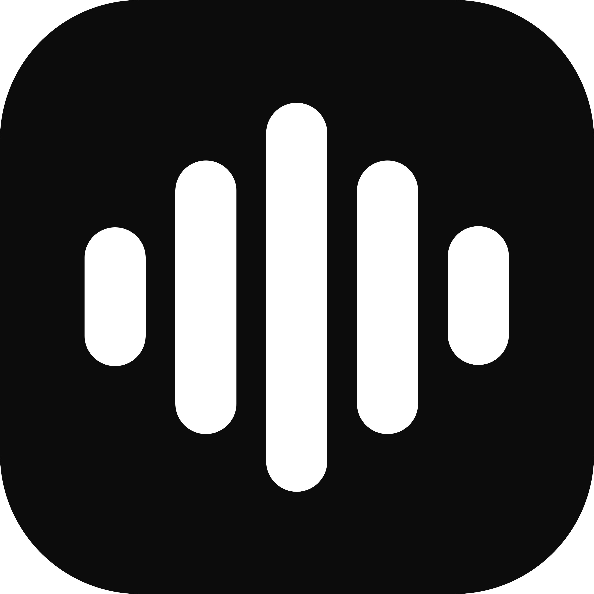

LocalFlow
Offline
Live Audio
Options
No Active Meeting
0 participants
Active Speakers
0 speaking
No one is currently speaking
In This Meeting
0
Waiting for meeting participants...
Enable Audio Capture
Stream speaker telemetry to desktop app
Noise Gate Threshold
Hide speakers below
6%
volume
LocalFlow Bridge Port
127.0.0.1 WebSocket port
Reconnect to LocalFlow App